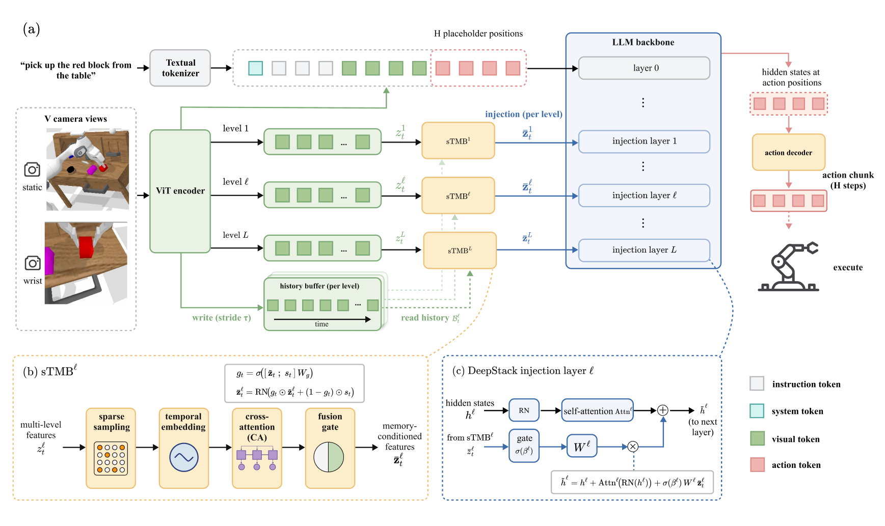

HIPPOVLA combines a spatially enhanced VLM backbone with an explicit short-term memory module — inspired by the hippocampus — to give VLA agents the temporal context they need for long-horizon manipulation.

Long-horizon VLA policies must remember previously observed objects, completed subgoals, and evolving scene configurations while still grounding each new instruction in the current visual observation. HIPPOVLA addresses this by keeping history outside the language prompt: sparse historical frames are encoded by the visual stack, summarized by STMB, fused with current DeepStack visual features through a learned gate, and decoded into continuous action chunks via an OFT-style action-token interface.
HIPPOVLA is organized around a spatial VLA backbone plus a separate feature-level episodic memory pathway, rather than treating history as more text-context tokens.
STMB operates at the visual-feature level. It samples a sparse history buffer, adds temporal embeddings, aggregates visual history through cross-attention, and produces memory-conditioned features with the same shape as the current visual features.
A learned per-token, per-channel gate fuses the current observation with the aggregated history. High gate values preserve the current frame, while low values pull more information from retrieved visual history.
Memory-conditioned features are injected into selected intermediate language layers. The action interface appends placeholder tokens, gathers their hidden states, and regresses a continuous future action chunk in one forward pass.
| Setting | Batch | Steps | Base Model | Added Module | Object | Spatial | Goal | Long |
|---|---|---|---|---|---|---|---|---|
| Official | — | 50k | starVLA-Qwen3VL-4B | None | 99.6 | — | 99.0 | 98.6 |
| Reproduced | — | 50k | starVLA-Qwen3VL-4B | None | 99.6 | 93.2 | 98.6 | 93.0 |
| + hippoVLA memory (interval 5) | 16 | 20k | starVLA-Qwen3VL-4B | Memory len 5 | 99.6 | 94.2 | 98.2 | 95.8 |
| + hippoVLA memory (interval 10) [ours] | 16 | 20k | starVLA-Qwen3VL-4B | Memory len 5 | 99.8 | 94.4 | 96.4 | 96.0 |
Success rate (%) on the four LIBERO suites under a single 4-in-1 co-training run. hippoVLA memory with sampling interval 10 yields the best overall performance, improving Long-horizon by +3.0 and Spatial by +1.2 over the no-memory baseline.
| Rank | Method | Input | MTLC | Step 1 | Step 2 | Step 3 | Step 4 | Step 5 | Avg. Len. |
|---|---|---|---|---|---|---|---|---|---|
| 1 | FLOWER | Static RGB + Gripper RGB | — | 99.4% | 95.8% | 90.7% | 84.9% | 77.8% | 4.53 |
| 2 | hippoVLA (DTT & Memory) [ours] | — | — | 98.9% | 95.3% | 89.3% | 82.9% | 75.9% | 4.42 |
| 3 | UniVLA | Static RGB + Gripper RGB | — | 98.9% | 94.8% | 89.0% | 82.8% | 75.1% | 4.41 |
| 4 | hippoVLA (MLP & Memory) | — | — | 99.1% | 94.4% | 88.4% | 81.6% | 74.1% | 4.38 |
| 5 | hippoVLA (MLP & Circular Memory) | — | — | 97.1% | 88.7% | 80.7% | 72.1% | 63.5% | 4.376 |
| 6 | SeeR-Large | Static RGB + Gripper RGB + Proprio | — | 96.3% | 91.6% | 86.1% | 80.3% | 74.0% | 4.28 |
| 7 | GR-MG | Static RGB + Gripper RGB + Proprio | — | 96.8% | 89.3% | 81.5% | 72.7% | 64.4% | 4.04 |
| 8 | MoDE | Static RGB + Gripper RGB | — | 96.2% | 88.9% | 81.1% | 71.8% | 63.5% | 4.01 |
| 9 | RynnBrain (MLP & No Memory) | — | — | 88.7% | 79.9% | 72.7% | 67.3% | 61.0% | 3.70 |
| 10 | GHIL-Glue | Static RGB | — | 95.2% | 88.5% | 73.2% | 62.5% | 49.8% | 3.69 |
| 11 | RoboUniView | Static RGB-D + Gripper RGB-D + Cam params | — | 94.2% | 84.2% | 73.4% | 62.2% | 50.7% | 3.64 |
| 12 | Diffusion Transformer Policy | Static RGB | — | 94.5% | 82.5% | 72.8% | 61.3% | 50.0% | 3.61 |
| 13 | CLOVER | Static RGB-D | — | 96.0% | 83.5% | 70.8% | 57.5% | 45.4% | 3.53 |
| 14 | 3D Diffuser Actor | Static RGB-D + Gripper RGB-D + Proprio + Cam params | — | 92.2% | 78.7% | 63.9% | 51.2% | 41.2% | 3.27 |
| 15 | GR-1 | Static RGB + Gripper RGB + Proprio | — | 85.4% | 71.2% | 59.6% | 49.7% | 40.1% | 3.06 |
| 16 | DeeR | Static RGB + Gripper RGB | — | 86.2% | 70.1% | 51.8% | 41.5% | 30.4% | 2.82 |
| 17 | SuSIE | Static RGB | — | 87.0% | 69.0% | 49.0% | 38.0% | 26.0% | 2.69 |
| 18 | RoboFlamingo | Static RGB + Gripper RGB | — | 82.4% | 61.9% | 46.6% | 33.1% | 23.5% | 2.47 |
| 19 | SPIL | Static RGB + Gripper RGB | — | 74.2% | 46.3% | 27.6% | 14.7% | 8.0% | 1.71 |
| 20 | HULC | Static RGB + Gripper RGB | — | 41.8% | 16.5% | 5.7% | 1.9% | 1.1% | 0.67 |
| 21 | Baseline | Static + Gripper RGB | 38.0% | 30.4% | 1.3% | 0.17% | 0.0% | 0.0% | 0.31 |
| 22 | Baseline | Static + Tactile | 43.7% | 17.3% | 0.8% | 0.08% | 0.0% | 0.0% | 0.26 |
| 23 | Baseline | Static RGB-D + Gripper RGB-D | 30.8% | 21.1% | 1.3% | 0.0% | 0.0% | 0.0% | 0.22 |
| 24 | Baseline | Static RGB | 38.6% | 20.2% | 0.2% | 0.0% | 0.0% | 0.0% | 0.20 |
On the CALVIN ABC→D leaderboard, hippoVLA (DTT & Memory) reaches rank 2 (Avg. Len. 4.42), a +0.72 improvement over the no-memory ablation (3.70), with Step 5 success improved from 61.0% to 75.9%.
Use these slots for qualitative rollouts that illustrate when episodic retrieval helps the policy remember object motion, completed subgoals, or partially observed scene changes.
@misc{hippovla_2026,
title = {HIPPOVLA: Hippocampus-Inspired Episodic Memory for Long-Horizon Vision-Language-Action Models},
author = {},
year = {2026},
note = {Project Page}
}